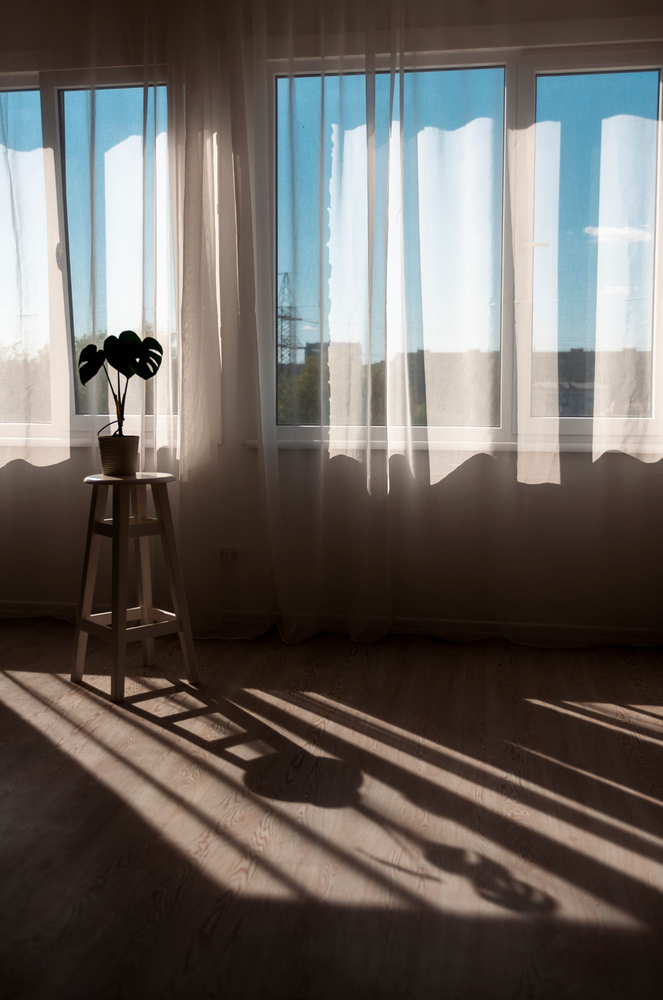
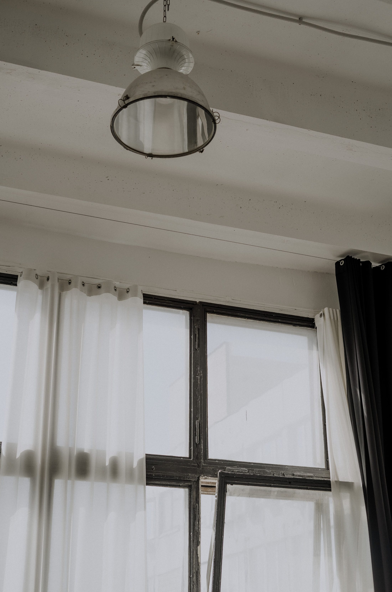
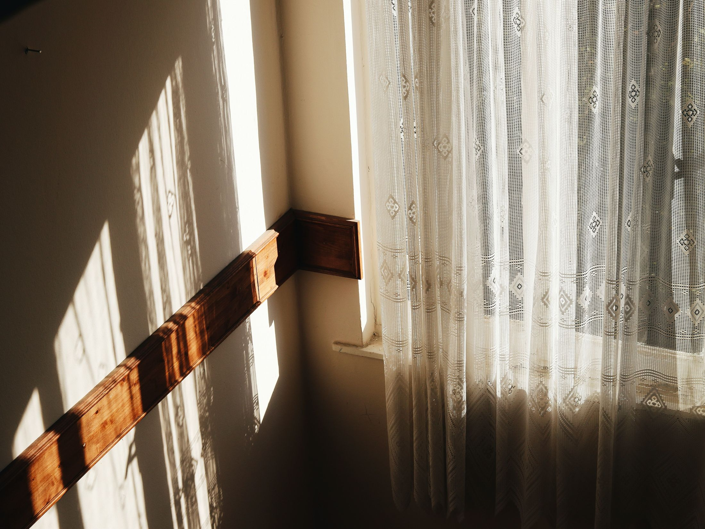
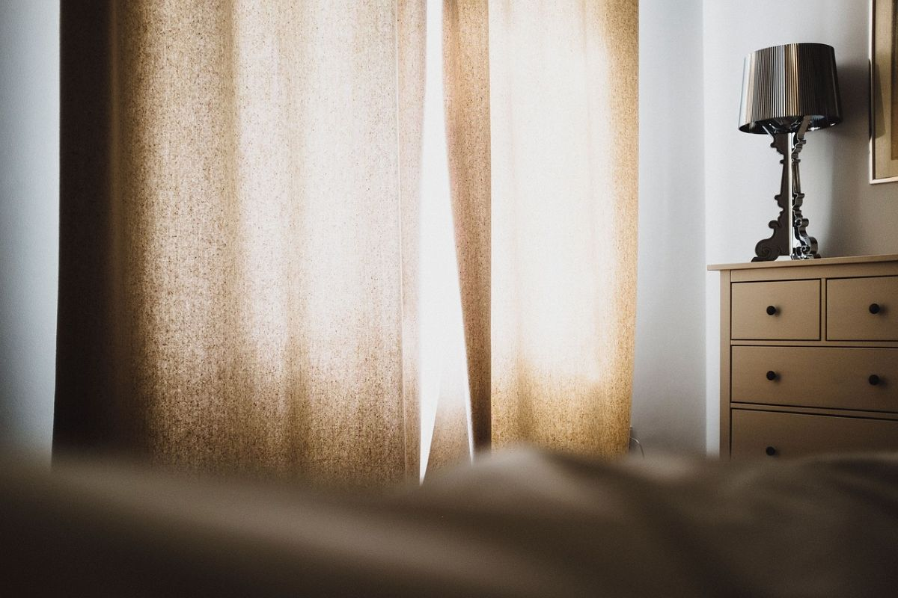
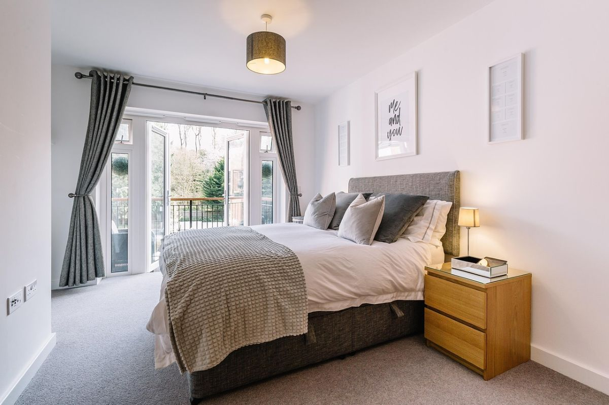
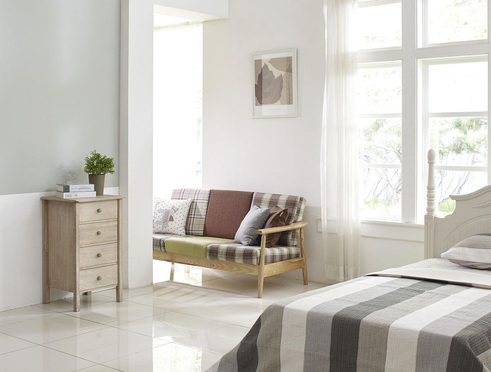
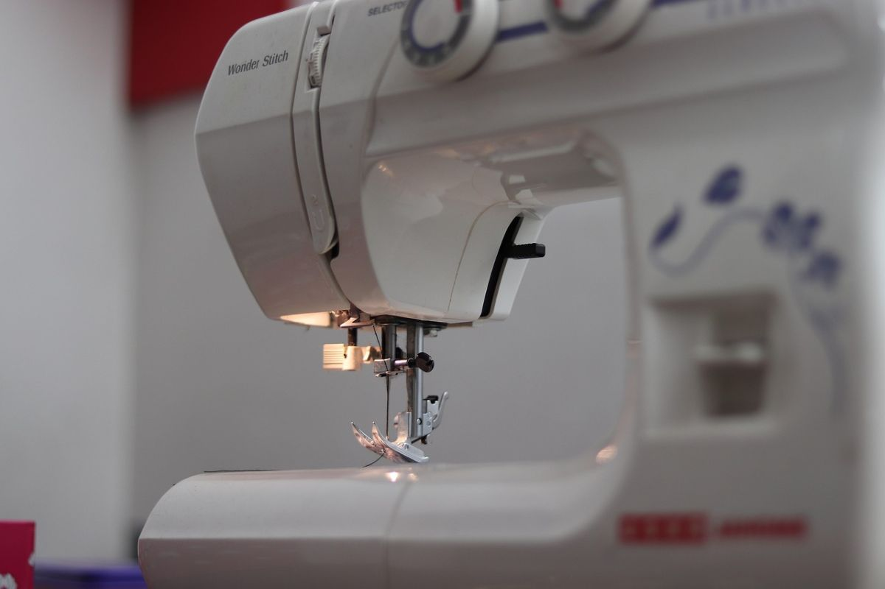
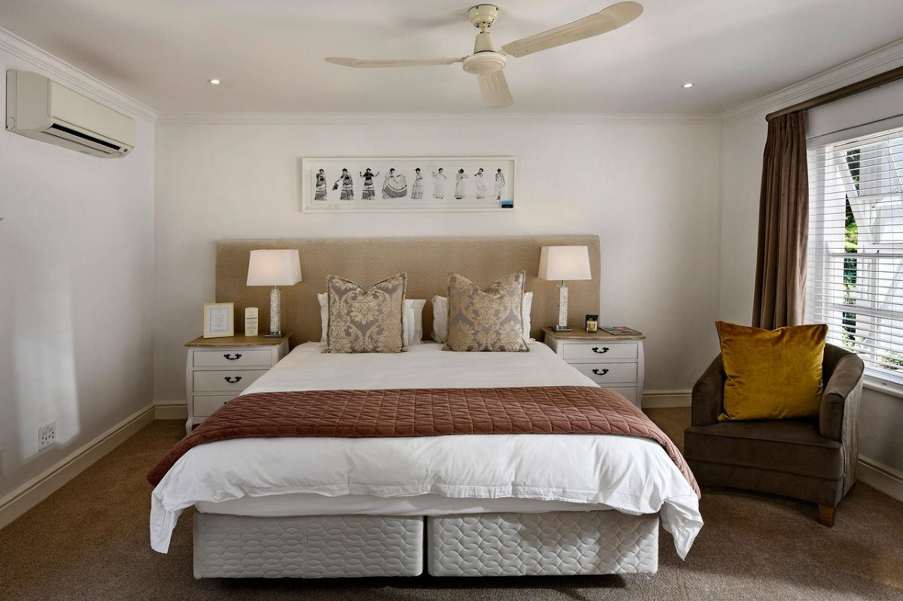

Roller
Un paño que sube y baja enrollado en un tubo. Ocupa nada cuando está arriba y es la más fácil de limpiar.
Para ventanas de cocina y oficina
Santiago Centro · fábrica propia
Roller, blackout, sunscreen y tradicional. Se miden, se cortan y se cosen acá mismo: no se compra un largo estándar y se recorta.
Ver cómo se mide Mandar la medida
939
reseñas en Google, verificadas el 27-08-2026
5,0
de promedio. No 4,8: cinco redondo, con esa cantidad de reseñas
4
medidas que hay que mandar para cotizar, y ninguna más
0
páginas donde ver un modelo o entender cómo se mide
La pieza que ningún competidor publica
Medir una ventana para una cortina tiene tres decisiones y ninguna es difícil. Lo que sigue es lo que hay que mandar por WhatsApp para que la fábrica cotice sin ir a terreno.
01
De borde a borde del vano, o de punta a punta del riel si ya hay uno. Se mide arriba, al medio y abajo: si los tres números no son iguales, manda el mayor.
02
Desde donde va a quedar el tubo hasta donde quiere que llegue la cortina: al marco, al piso o a media pared. Ese «hasta dónde» lo decide usted, no la ventana.
03
Dentro queda a ras y se ve el marco; fuera tapa el marco entero y deja pasar menos luz por los costados. Es la decisión que más cambia cómo se ve, y la que nadie explica.
Con esos tres datos y una foto de la ventana, la fábrica ya puede cotizar. El mensaje se arma solo con el botón de abajo.

Qué resuelve cada una
La lista de abajo es la del oficio. Cuáles fabrica Rolzzo y en qué telas lo confirma la fábrica: acá va marcado como ejemplo hasta que lo digan.
Un paño que sube y baja enrollado en un tubo. Ocupa nada cuando está arriba y es la más fácil de limpiar.
Para ventanas de cocina y oficina
Tela opaca: corta la luz casi entera. La diferencia con una cortina gruesa cualquiera es que el paño no deja pasar el sol por la trama.
Para dormitorios y salas de reunión
Tela técnica con trama abierta: baja el calor y el brillo pero deja ver hacia afuera. De día no se ve hacia adentro; de noche sí.
Para ventanales que dan al poniente
Cortina de tela con caída, en riel o barra. Es la que abriga y la que se nota: la tela manda más que el mecanismo.
Para living y comedor

Fábrica, no revendedor
La diferencia entre una fábrica y una tienda es quién responde cuando la medida no calza. Acá el paño se corta para esa ventana: si sobra o falta, se arregla en el mismo taller y no hay que devolver nada a un proveedor.
Los cuatro datos de arriba están marcados como ejemplo a propósito. Son los que la fábrica confirma en una conversación de dos minutos, y son justo los que hoy no están en ninguna parte.

«Novecientas treinta y nueve personas pusieron cinco estrellas.
Ninguna de esas opiniones vive en una página de ustedes.»
De la medida a la ventana





Estas fotos son de bancos de uso libre y no son del taller de Rolzzo. Están para que se vea de qué habla la página. Las de verdad las tiene la fábrica y son mejores: cada cortina que sale es una foto.
Escribir
Con eso alcanza para cotizar. El número es el que aparece en su ficha de Google y es celular, así que recibe WhatsApp.

Para el dueño
Una propuesta de sitio web hecha por nuestra cuenta. Cortinas Rolzzo no la encargó ni la ha revisado. Dimos por cierto sólo lo que ya es público: las 939 reseñas con 5,0 de su ficha de Google y el celular.
La dirección exacta, el horario, los plazos y para qué sirve cada tipo de cortina en su caso. Todo va marcado con línea punteada. No hay precios a propósito: publicar un valor que no nos dieron sería inventarlo.
Fotos del taller y de cortinas instaladas. Las del banco muestran el rubro; las suyas muestran su trabajo, y para una fábrica esa diferencia es toda la venta.